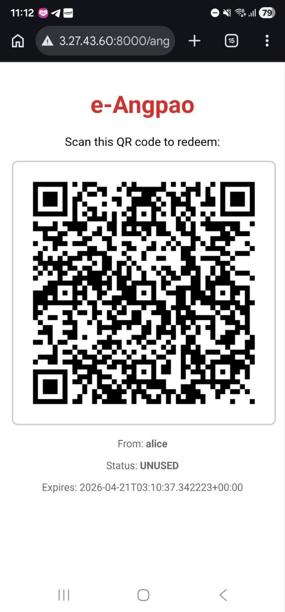
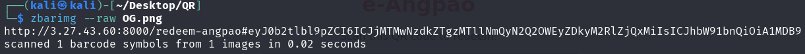
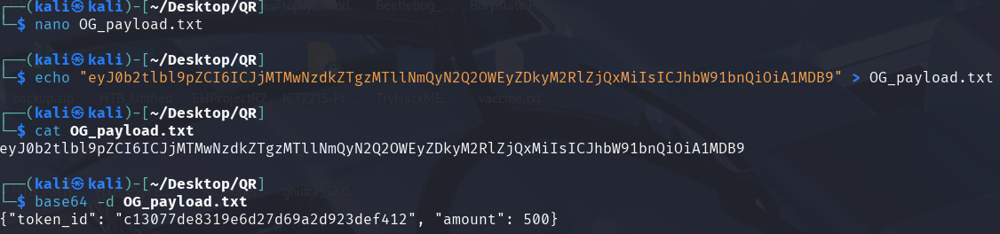
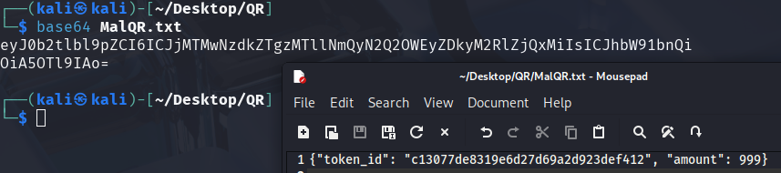
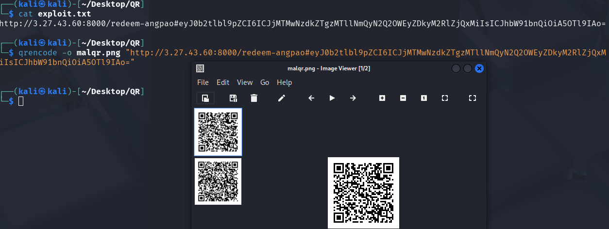
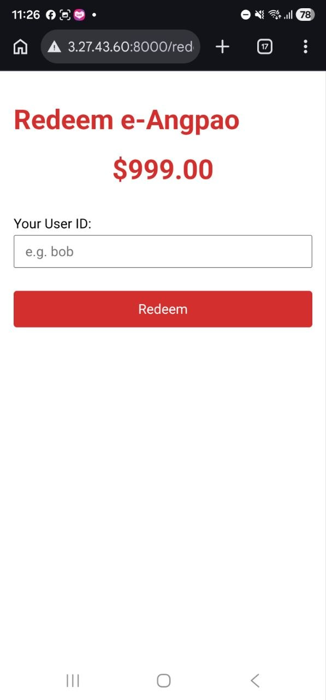
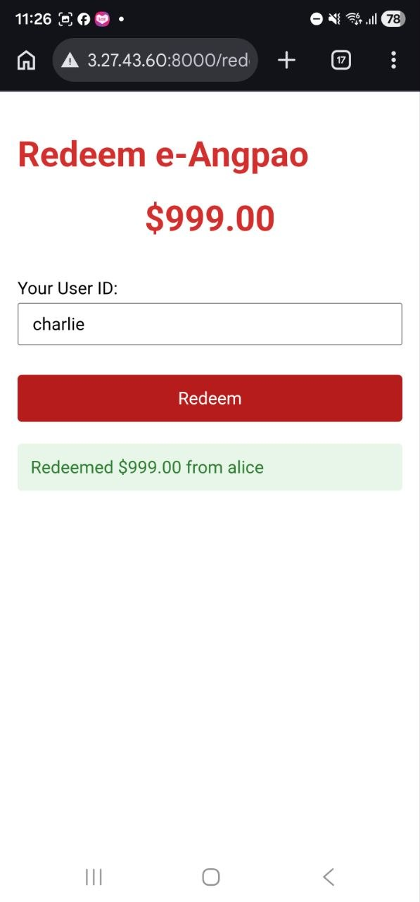
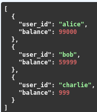

POC E-Angpao System
A closer look into how the E-Angpao system works - potential vulnerabilities and more
System Overview & Application Flow
Purpose
E-Angpao is a QR-based digital red packet (angpao) transfer system that digitizes the traditional Asian practice of gifting money in red envelopes. The application demonstrates a common mobile payment flow where senders generate QR codes that recipients scan to claim funds.
The purpose of this proof-of-concept project is to showcase how small oversights in server/application configurations can lead to major financial losses. The codes documented will include both an intentionally vulnerable version as well as a secure version that implements security measures remediating showcased vulnerabilities.
Note: This project is a simplified proof-of-concept designed to demonstrate security concepts. The described flow is intentionally streamlined for educational purposes and does not reflect the complexity of real-world payment systems, which would include additional layers of authentication, encryption, fraud detection, and regulatory compliance.
How the System Works

Application Flow
The system operates through four main stages: angpao creation, QR code generation, QR scanning, and fund redemption.
Stage 1: Angpao Creation
The sender initiates the transfer by calling POST /create-angpao with their user ID and the desired amount.
- The server validates that the sender exists in the user database to prevent false creations
- It checks that the sender has sufficient balance before deducting the amount from the sender's account
- It generates a unique cryptographically random token and stores it in a database table alongside an expiry timestamp
Stage 2: QR Code Generation
After creating the token, the server generates a QR code by constructing a redemption URL containing the token ID. It then encodes the URL into a QR code image and returns the QR code as a Base64-encoded PNG. The sender then shares this QR code with the intended recipient.

Stage 3: QR Scanning
The recipient scans the QR code using their phone's camera, which leads to a browser opening the redemption page displaying a form requesting the recipient's user ID with the token ID pre-populated from the URL parameter.
Stage 4: Fund Redemption
When the recipient submits the form, the server processes the redemption by:
- Validating that the recipient exists in the database
- Retrieving the token record and performing checks: verifying the token status is unused, confirming the token has not expired, and ensuring the recipient is not the same as the sender
- If all checks pass, marking the token as used, crediting the transfer amount to the recipient's balance, and returning a success message
Implementation Details
System Environment
The application is hosted on an Amazon AWS EC2 instance, with public IP address for outside users to access and simulate the redemption process.
Libraries Used
- FastAPI (Python) — Backend framework for REST API endpoints and request handling
- SQLite with WAL mode — Lightweight database for persistent storage of users and tokens
- qrcode library — Encoding redemption URLs into scannable QR images
- Pydantic — Request/response model validation
- Uvicorn (ASGI) — Async HTTP server
API Endpoints
- GET /users — List all users and balances (debug)
- POST /create-angpao — Create a new angpao and generate QR code
- GET /angpao/{token_id}/qr — Retrieve QR code as PNG image
- GET /redeem-page — HTML redemption form
- POST /redeem — Process angpao redemption
- GET /token-status/{token_id} — Check token status
- GET /docs — Endpoint with all the functions for ease of experimentation
Database Schema
users table
Stores registered user accounts and their current balances.
- user_id (TEXT, PK) — Unique identifier for each user
- balance (INTEGER) — Current balance in smallest currency unit
transfer_tokens table
Stores all created angpao tokens and their redemption state.
- token_id (TEXT, PK) — 32-character unique token
- sender_id (TEXT, FK) — References the user who created the angpao
- receiver_id (TEXT, FK) — References the user who redeemed (null until redeemed)
- status (TEXT) — Current state: UNUSED, USED, or EXPIRED
- expiry_timestamp (REAL) — Unix timestamp when token expires
- created_at (REAL) — Unix timestamp of creation
- redeemed_at (REAL) — Unix timestamp of redemption (null until redeemed)
Token Lifecycle
Tokens transition through three possible states:
- UNUSED — Token created and awaiting redemption (triggered by POST /create-angpao)
- USED — Successfully redeemed by a recipient (triggered by POST /redeem)
- EXPIRED — Time limit exceeded; in the vulnerable version, funds are not refunded. The secure version implements automatic refund on expiration.
Features
- Token Generation — Uses secrets.token_hex(16) for cryptographically secure 32-character tokens
- Transaction Atomicity — SQLite BEGIN IMMEDIATE locks for concurrent redemption protection
- Rate Limiting — 10 requests per 60 seconds per IP address
- Expiry Handling — 60-second token validity with automatic refund on expiration
- Self-Redemption Prevention — Sender cannot redeem their own angpao
Assumptions and Scopes
This proof-of-concept operates under several assumptions and intentional simplifications:
- No refund on expiry: When a token expires, the sender's funds are not returned (intentional design flaw)
- XSS vulnerability present: The /redeem-page endpoint does not sanitize the token query parameter
- No authentication system: The application has no login or session management. Users are identified solely by their user_id string
- Debug endpoints exposed: The /docs and /users endpoints exist purely for testing
- No HTTPS: The application runs over HTTP (production would require TLS/HTTPS)
- Single-server deployment: No consideration for load balancing or distributed databases
- No input validation beyond Pydantic: No additional sanitization, fraud detection, or anomaly monitoring
Vulnerability Showcase
The application has security flaws intentionally built into the vulnerable version. Each vulnerability is explained with the affected code, why it's insecure, and what an attacker could achieve by exploiting it.
Vulnerability #1 — Fragment-Based URL Payload
The QR code contains a URL with the payload in the fragment (#) rather than as a query parameter. URL fragments are never sent to the server by browsers — they exist only client-side. This means the server cannot log, inspect, or validate the payload during page load, and the client has complete control over decoding the payload and submitting modified values.
Vulnerable Code:
Vulnerability #2 — Implicit Client-Side Trust
The server does not store the transaction amount in the database. Instead, the amount is embedded in the QR code payload and the server trusts whatever amount the client submits during redemption. This means that an attacker who intercepts or receives the QR code can decode it and modify the amount to any value they wish.
Vulnerability #3 — Missing Amount Column in Database Schema
The transfer_tokens table does not have a dedicated column to store the transaction amount. Recording of the amount only exists in the qr_payload column as an encoded blob. This means that the server has no source of truth to validate redemption claims against.
Demonstration of Attack Scenario
Scenario: User Alice sends a $500 angpao to Charlie. Charlie intercepts the QR code and modifies the amount to $999 before redeeming it.
Step 1: Decoding the Received QR
Charlie receives the e-QR link http://3.27.43.60:8000/angpao/c13077de8319e6d27d69a2d923def412.
They download the QR code and decode it using zbarimg to reveal the encoded data:

Step 2: Decoding the URL Payload
Charlie identifies that the payload after the # is base64 encoded and decodes it:

The decoded payload reveals:
Step 3: Crafting Malicious Payload
With knowledge of the encoding method, Charlie creates a new payload with an inflated amount:

Charlie generates a new malicious URL and creates a QR code from it:


Step 4: Exploitation
When Charlie scans the modified QR code, the redemption page displays $999.00 instead of the original $500.00:

After clicking "Redeem" with user ID "charlie", the transaction is successful:

Attack Result
The final state shows Charlie's balance has been credited with $999, while Alice was only debited $500:

Impact: Alice is only debited the original amount (500) she specified at creation. The sender's balance is deducted upfront when the angpao is created, not at redemption. The vulnerability only affects the receiver's credit — Charlie receives 999 instead of 500. The credited amount exceeds the authorized transfer value, effectively inflating the receiver's balance without a corresponding debit.
Security Impact
While not indicative of a real-world system, the application's client-trusted amount vulnerability has severe consequences across multiple dimensions.
Financial Perspective
Attackers can claim unlimited funds regardless of what the sender authorized — the sender's account is only debited the original amount while the excess is effectively created from nothing, limited only by database integer limits.
Integrity Issues
Transaction records become meaningless since the logged amounts reflect attacker input rather than actual transaction values, corrupting any audit trail and making forensic analysis impossible. Total user balances would eventually exceed total deposits, a clear indicator of systematic fraud.
Trust & Compliance
This fundamentally breaks user trust in the platform. Users cannot rely on the system to honor intended transaction amounts, and for any real financial application, this vulnerability would make regulatory compliance impossible.
Real-world analogy: This flaw is equivalent to a bank letting customers write their own check amounts, a vending machine dispensing items based on what customers claim to have paid, or a casino paying out winnings based on what players say they bet.
Secure Implementation
The above demonstrated vulnerability shows how security and server misconfigurations can lead to potentially devastating financial impacts. Below are secure remediations that could be implemented to mitigate/prevent this vulnerability.
1. Server-Side Amount Storage and Validation
Store the amount in the transfer_tokens table at creation time and use it for validation during redemption.
2. Remove Sensitive Data from Client-Controlled Payloads
Only include the token ID in the QR code. The application will then check against the token database for the amount to be credited.
Secure approach: Use standard query parameters instead of URL fragments so the server can log and inspect all incoming redemption requests.
Additional Security Features
Automatic Refunds on Token Expiry
Tokens expire after 60 seconds, and when expiry is detected, funds are automatically returned to the sender. This is implemented through a _refund_expired_token() function which marks the token as expired and credits the sender's balance in a single atomic operation.
The refund is triggered in two scenarios:
- When someone attempts to redeem an expired token
- When anyone checks the status of an expired token (lazy expiry)
Note: This feature was impossible to implement in the vulnerable version because the transaction amount was not stored in the database. By storing the amount server-side, the secure version ensures that unclaimed funds are always recoverable.
Future Enhancements
Cryptographic Integrity Mechanisms (HMAC)
One additional enhancement that can be added is the implementation of cryptographic integrity mechanisms such as HMAC.
With HMAC, the server would generate a signature over the token ID and any associated metadata using a secret key, then append this signature to the QR payload. Upon redemption, the server would recompute the signature and compare it against the one provided — any tampering with the token would result in a signature mismatch and rejection.
Use Cases for HMAC
This approach is particularly valuable in:
- Distributed systems where multiple servers handle redemptions and may not share immediate database access
- Offline-capable scenarios where the recipient's device needs to verify token authenticity before contacting the server
- High-volume production systems requiring offline verification
Current approach: For this proof-of-concept, server-side storage is sufficient since all validation occurs against a single database. However, for production systems, HMAC or similar signing mechanisms (such as JWT with signed claims) would provide cryptographic assurance that tokens have not been forged or modified in transit.
Code Repository
The complete source code for both the vulnerable and secure versions of this E-Angpao system is available on GitHub:
Legal Disclaimer:
This proof-of-concept system is provided strictly for educational and research purposes to demonstrate security vulnerabilities. This code is NOT intended for production use and should NEVER be deployed in any real-world environment handling actual financial transactions.
By accessing, downloading, or using this code, you acknowledge and agree that:
- The creator assumes NO responsibility or liability for any damages, financial losses, security breaches, or other consequences arising from the use, misuse, or deployment of this code
- You use this code entirely at your own risk
- Any deployment of this system in a production environment is done without the authorization or endorsement of the creator
- You are solely responsible for ensuring compliance with all applicable laws and regulations in your jurisdiction